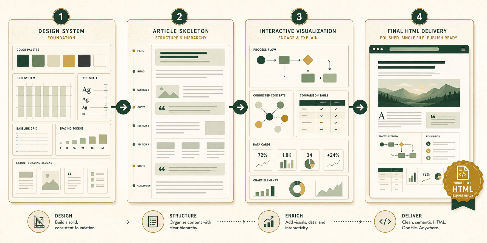

先说结论：它们不是四选一。
如果只是“写一篇专门的文章”，核心应该是 `article-magazine`。但如果你要的是高质量 HTML 图文长文，单靠它还不够。
`claude-design` 决定像不像一件设计作品；`article-magazine` 决定像不像一篇文章；`html-visual` 决定有没有图解和互动；`html-anything` 决定最终能不能稳定落成可打开、可复用、可转换的 HTML。
最好的保留方式不是删掉谁，而是把它们变成一条流水线：设计系统 → 文章骨架 → 可视化模块 → 单文件交付。
横向对比表。
这四个 skill 看起来都在“写 HTML”，但真正的差别在于它们各自默认回答的问题不同。
下面内容改为手机端分块阅读：
Skill：claude-design
最擅长：高保真视觉方向、品牌感、杂志感、版式系统、避免模板味。
不擅长：它不是专门的文章转换器；如果没有内容骨架，容易先陷入视觉探索。
适合保留方式：作为“视觉总监”放在最前面：先定审美和设计规则。
Skill：article-magazine
最擅长：长文排版、公众号式节奏、章节组织、引用块、代码块、文末行动卡。
不擅长：交互能力弱；复杂数据图、筛选、可视化要另补。
适合保留方式：作为“文章主模板”：专门负责 HTML 图文长文。
Skill：html-visual
最擅长：流程图、架构图、图表、交互筛选、看板、时间线、单页可视化。
不擅长：默认不是长文写作；容易变成工具页或图表页，不像文章。
适合保留方式：作为“图解模块库”：给文章插入互动解释区。
Skill：html-anything
最擅长：把各种输入变成可打开的 HTML 成品；自动选风格、强调单文件交付。
不擅长：范围太大，若不约束题材和风格，可能输出泛化报告。
适合保留方式：作为“最终打包器”：统一落盘、交付、后续转平台。
逐个拆开看。
01 claude-design：负责“像不像高级设计”
它的价值不是写文章，而是防止 HTML 文章变成普通博客模板。比如字体层级、首屏构图、色彩克制、真实素材优先、不要一堆圆角卡片，这些都属于它的审美约束。
所以它适合做第一步：先声明视觉系统。哪怕最后使用 `article-magazine` 写正文，也应该让 `claude-design` 先定调。
02 article-magazine：负责“像不像一篇可读长文”
这是专门写文章时最核心的 skill。它天然适合公众号、技术博客、杂志长文：大标题、作者信息、短段落、H2/H3、引用、代码、列表、分隔符、最后一段收束。
如果你的目标是“HTML 写文章”，它应该是主干，而不是辅助。
03 html-visual：负责“让复杂内容看得懂”
文章里一旦有流程、对比、架构、决策树、时间线，就不要只靠文字。`html-visual` 适合把这些内容做成 SVG、图表、筛选器、可点击面板。
它不一定负责整篇文章，但很适合负责文章里的关键图文模块。
04 html-anything：负责“最后真的变成成品”
它的定位更像总装线：从一个想法、文件、URL 或资料夹出发，最后生成一个可打开、可分享、可继续转换的 HTML 文件。它适合做最后一公里。
但它太通用，所以使用时要明确指定：这是文章，不是 dashboard，不是 landing page，不是通用报告。
最稳的组合方式。
不要让四个 skill 同时抢主导权。它们应该像工序一样排队。
- 先用 `claude-design` 定视觉系统。确定是杂志、长文、冷静技术风，还是更像设计评论。顺便约束字体、色板、首屏、图片使用方式。
- 再用 `article-magazine` 搭文章骨架。把内容拆成标题、引入、核心观点、场景编号、局限、结尾观点。
- 中途调用 `html-visual` 做关键模块。比如横向对比表、使用决策树、流程图、可点击筛选区。
- 最后用 `html-anything` 收口交付。保证是单文件 HTML，能打开，能转发，后续能再导出 PNG 或改成平台版本。

请用四个 HTML skill 配合完成一篇图文长文：
1. claude-design：先定视觉系统和版式约束。
2. article-magazine：作为文章主骨架，按杂志/公众号长文排版。
3. html-visual：为关键对比、流程、决策树做交互图解。
4. html-anything：最终输出单文件 HTML，落盘并验证可打开。
题材：四个 HTML 写作/视觉 skill 的横向对比与使用策略。不知道用哪个？按目标选。
下面这个小模块可以直接给其他线程看：点目标，就知道谁做主、谁辅助。
写文章：`article-magazine` 做主
主线用 `article-magazine`。开头用 `claude-design` 定视觉，遇到复杂说明时让 `html-visual` 插图解，最后让 `html-anything` 收口成单文件。
保留全部。只把职责写清楚：`article-magazine` 是文章主模板，`claude-design` 是审美前置，`html-visual` 是图解组件，`html-anything` 是最终交付器。以后“专门写文章”默认走这条链路。
最后怎么保留配合？
我建议不要删，也不要合并成一个大而全 skill。大而全的结果通常是边界变模糊，线程不知道该听谁的。
更好的做法是给其他线程一句固定规则：
写专门文章时，`article-magazine` 为主；追求设计质量时，先过 `claude-design`；需要图解互动时，插入 `html-visual`；最终落盘交付时，用 `html-anything` 收口。
一句话版
这四个 skill 的关系不是竞品，而是工序。把它们当成“设计总监、主笔、图解编辑、出版打包”四个角色，就不会混用。